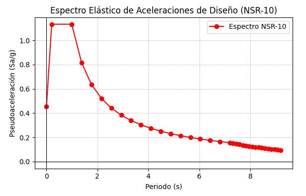
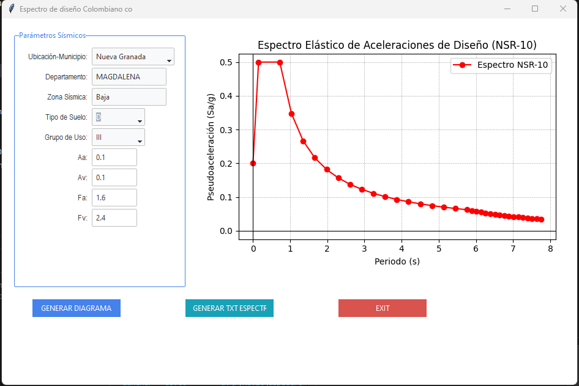

Generador de espectros NSR-10 por municipio
Herramienta en Python con interfaz que genera el espectro de pseudoaceleración de diseño según la NSR-10, a partir de la selección del municipio en Colombia.

Qué hace
Herramienta en Python con interfaz que genera el espectro de pseudoaceleración de diseño según la NSR-10, a partir de la selección del municipio en Colombia. El objetivo es acelerar el proceso de obtención, verificación y documentación de espectros para análisis sísmico.
Flujo de trabajo
-
Seleccionar municipio
Elección del municipio colombiano dentro de la interfaz de la herramienta.
-
Calcular parámetros
Cálculo automático de los parámetros de amenaza sísmica correspondientes.
-
Generar espectro
Construcción del espectro de pseudoaceleración de diseño según la NSR-10.
-
Exportar
Gráfica y valores listos para memoria técnica o modelación estructural.
Características
Selección de municipio
Cobertura de municipios en Colombia bajo criterios NSR-10.
Cálculo automático
Parámetros de amenaza y espectro calculados sin intervención manual.
Gráfica lista para reporte
Salida gráfica exportable, integrable directo en memorias técnicas.
Rapidez y precisión
Enfoque en reducir tiempos y eliminar errores manuales de cálculo.
Impacto en práctica profesional
- Disminuye el tiempo de obtención de espectros por municipio.
- Reduce el riesgo de errores en parámetros sísmicos.
- Facilita la documentación técnica para memorias de cálculo.
- Estandariza criterios dentro del flujo de diseño estructural.
Capturas
Ejemplos de la interfaz y los resultados generados por la herramienta.


